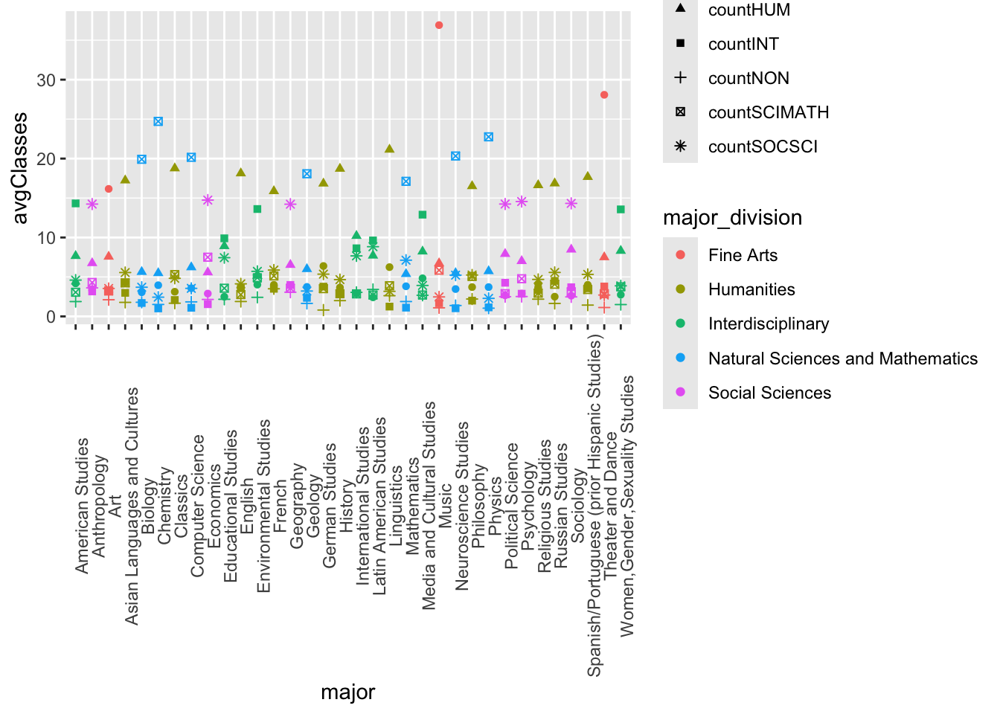

library(readr)
library(dplyr)
library(plotly)
library(tidyverse)
library(lubridate)
library(rvest)
library(stringr)
majordata <- read_csv("majordata.csv")Project ideas
Including Plots
Research question idea: How do different majors vary in the average number of classes taken in each division? How does
# ----CODE FOR TAB NUMBER 3 IN THE SHINY APP----
# here we are mainly just pivoting the major data into a longer format so that it's easier to work with.
majors <- majordata%>%
pivot_longer(cols = c(`major1`, `major2`, `major3`), names_to = "major#", values_to = "major")%>%
pivot_longer(cols = c(`major1_division`, `major2_division`, `major3_division`), names_to = "major#_division", values_to = "major_division") %>%
filter(!is.na(major), !is.na(major_division)) %>%
filter(`major#` == str_sub(`major#_division`,1,6))%>%
select("StudentID", "major#", "major", "major#_division", "major_division", "FineArts_count", "Humanities_count", "Interdisciplinary_count", "NatScienceandMath_count", "SocialSciences_count", "NonDivisional_count", "admit_type")%>%
rename(`Fine Arts` = FineArts_count)%>%
rename(`Natural Sciences and Mathematics` = NatScienceandMath_count)%>%
rename(`Humanities` = Humanities_count)%>%
rename(`Social Sciences` = SocialSciences_count)%>%
rename(`Interdisciplinary` = Interdisciplinary_count)%>%
rename(`NonDivisional` = NonDivisional_count)
# The number of classes that each student took in the 5 divisions(in long format)
majors2 <- majors%>%
pivot_longer(cols = c(`Fine Arts`, `Humanities`, `Interdisciplinary`, `Natural Sciences and Mathematics`, `Social Sciences`, `NonDivisional`), names_to = "division", values_to = "numOfClasses")
# This is the average number of classes that a student in each major would take across all of the divisions.
Divisions_By_Major <- majors%>%
group_by(major)%>%
summarise(countFA = mean(`Fine Arts`), countHUM = mean(Humanities), countINT = mean(Interdisciplinary), countSCIMATH = mean(`Natural Sciences and Mathematics`), countSOCSCI = mean(`Social Sciences`), countNON = mean(NonDivisional))
# The average number of classes the a student in each major would take outside of their majors division.
OutsideMajor <- majors2%>%
filter(!(major_division == division))%>%
group_by(StudentID, major)%>%
summarise(num = sum(numOfClasses))
# average number of classes taken outside of your majors division(one number summary). The average number of classes taken outside your majors division is 24.67.
OneNumberSummary <- majors2%>%
filter(!(admit_type == "TRN"))%>%
filter(!(major_division == division))%>%
group_by(StudentID)%>%
summarise(num = sum(numOfClasses))%>%
summarise(Average = sum(num)/n())
# average number of classes taken in each division by major, along with the division that each major falls in.
majorsViz <- OutsideMajor%>%
group_by(major)%>%
summarize(avg = mean(num))%>%
arrange(desc(avg))
majorsViz <- majorsViz%>% #join with division_by_major
left_join(majors)%>%
left_join(Divisions_By_Major)%>%
distinct(major, .keep_all = TRUE)%>%
select(major, avg, major_division, countFA, countHUM, countINT, countSCIMATH, countSOCSCI, countNON)
# This is the same data as "majorsViz" above but in the longer format.**This is the data used for the third viz on the shiny app.**
majorsViz2 <- majorsViz%>%
group_by(major_division)%>%
pivot_longer(cols = c(countFA, countHUM, countINT, countSCIMATH, countSOCSCI, countNON), names_to = "division", values_to = "avgClasses")
majorsViz2%>%
group_by(major_division)%>%
summarise(classesOutside = mean(avg))
#----CODE FOR TAB NUMBER 1 IN THE SHINY APP----
# average number of classes taken in each division based on the number of majors a student has.
majo <- majordata %>%
group_by(major_ct) %>%
summarise(fine_arts = mean(FineArts_count),
humanities = mean(Humanities_count),
natscience = mean(NatScienceandMath_count),
social_science = mean(SocialSciences_count),
nonDivis = mean(NonDivisional_count),
inter= mean(Interdisciplinary_count))%>%
rename(`Fine Arts` = fine_arts)%>%
rename(`Humanities` = humanities)%>%
rename(`Social Sciences` = social_science)%>%
rename(`Natural Science and Mathematics` = natscience)%>%
rename(`Non Divisional` = nonDivis)%>%
rename(`Interdisciplinary` = inter)
# long version of the above. **Data used for the first viz on the shiny app.**
majjors <- majo %>%
pivot_longer(cols = !"major_ct", names_to = "division")
#----CODE FOR TAB NUMBER 2 IN THE SHINY APP----
# this is the average number of prefixes for Macalester students(one number summary)
averagePrefix<-majordata %>%
summarize("Average Amount of Prefixes of All Students"=mean(prefix_count,na.rm=TRUE),"Medain Prefix"=median(prefix_count))
averagePrefix
#Filtering out all of the students that have more then one major.
singleMajors<-majordata %>%
filter(is.na(major2))
singleMajors%>%
mutate(across(where(is.character), as.factor)) %>%
summary()
#average number of prefixes taken for each major at Macalester.
avgPrefix<-singleMajors %>%
group_by(major1) %>%
summarize(avgPrefix=mean(prefix_count,na.rm=TRUE)) %>%
arrange(desc(avgPrefix))
#Same as "avgPrefix", but added a variable for the division that each major falls in. **Data used for the second viz on the shiny app.**
avgPrefix2 <- avgPrefix %>%
left_join(singleMajors)%>%
select(major1, avgPrefix, major1_division)%>%
distinct()# ------ PRACTICE VISUALIZATIONS------
#Visualization No. 1
test <- majorsViz2%>%
ggplot(aes(x = major, y= avgClasses, fill = division))+
geom_col(position = "fill")+
theme(axis.text.x = element_text(angle = 90))
#Visualization No. 2***
viz1 <- majorsViz2%>%
ggplot(aes(x = major, y = avgClasses))+
geom_point(aes(shape = division, color = major_division))+
theme(axis.text.x = element_text(angle = 90))+
labs(title = "Distrubution of Classes Based on Your Major", y = "Average Number of Classes", x = "Major")
#Visualization No. 3
majorsViz2%>%
ggplot(aes(x = major, y = avgClasses))+
geom_point(aes(shape = division, color = major_division))+
theme(axis.text.x = element_text(angle = 90))
ggplotly(test)ggplotly(viz1)#This is the custom theme that each one of the visualizations in the shiny app are using.
theme_gppr <- function(){
font <- "Georgia" #assign font family up front
theme_minimal() %+replace% #replace elements we want to change
theme(
#grid elements
panel.grid.major = element_blank(), #strip major gridlines
panel.grid.minor = element_blank(), #strip minor gridlines
axis.ticks = element_blank(), #strip axis ticks
#since theme_minimal() already strips axis lines,
#we don't need to do that again
#text elements
plot.title = element_text( #title
family = font, #set font family
size = 15, #set font size
face = 'bold', #bold typeface
hjust = 0, #left align
vjust = 2), #raise slightly
plot.subtitle = element_text( #subtitle
family = font, #font family
size = 11), #font size
plot.caption = element_text( #caption
family = font, #font family
size = 9, #font size
hjust = 1), #right align
axis.title = element_text( #axis titles
family = font, #font family
size = 10), #font size
axis.text = element_text( #axis text
family = font, #axis famuly
size = 9,angle=90), #font size
axis.text.x = element_text( #margin for axis text
margin=margin(5, b = 10))
#since the legend often requires manual tweaking
#based on plot content, don't define it here
)
}